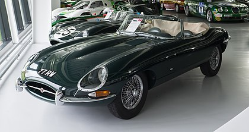
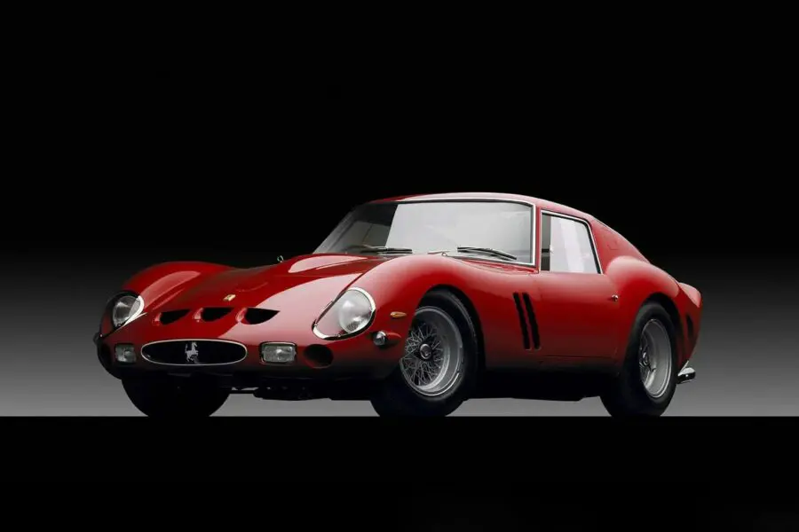
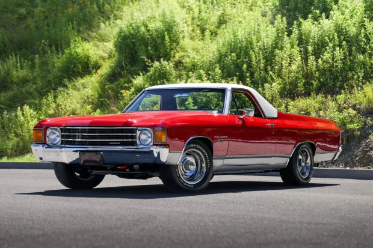

VINTAGE CAR
These classic masterpieces evoke nostalgia as they represent a past era characterized by elegance, craftsmanship, and innovation. In this comprehensive guide, we will explore the captivating world of vintage cars. We will also cover their age classification, valuation factors, iconic models, and much more.

|
 |  |
1972 Chevrolet El Camino 402

This 1972 Chevrolet El Camino was ordered through Duncan Chevrolet in Brady, Texas, and it was specified with tinted glass, a vinyl roof, front disc brakes, power steering, a tilt wheel, a heavy-duty radiator, air conditioning, and a 402ci Turbo-Jet V8 linked with a three-speed Turbo Hydra-Matic automatic transmission.
The Cranberry Red-over-tan truck was refurbished between 2016 and 2018, which work including overhauling the mechanical components, installing 15×8″ rally wheels, lowering the suspension, refinishing the exterior and replacing trim, and reupholstering the interior. Acquired by the selling dealer in 2024, this El Camino is now offered in New York with original purchase documents, service records and a summary, and a clean Texas title.